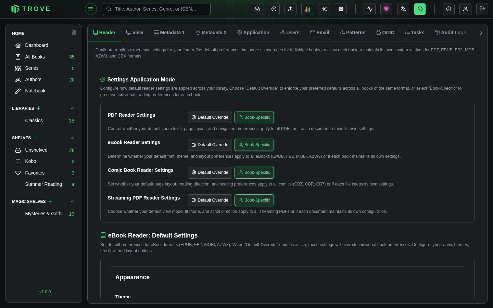
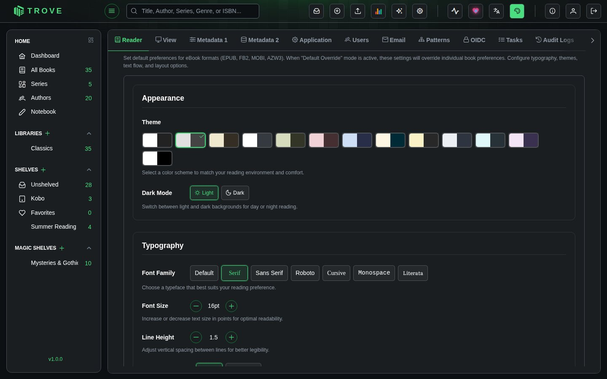
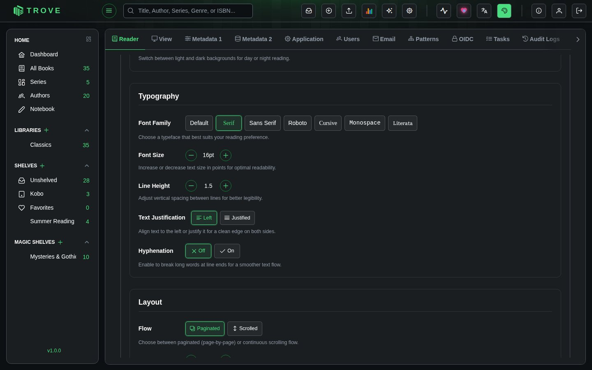
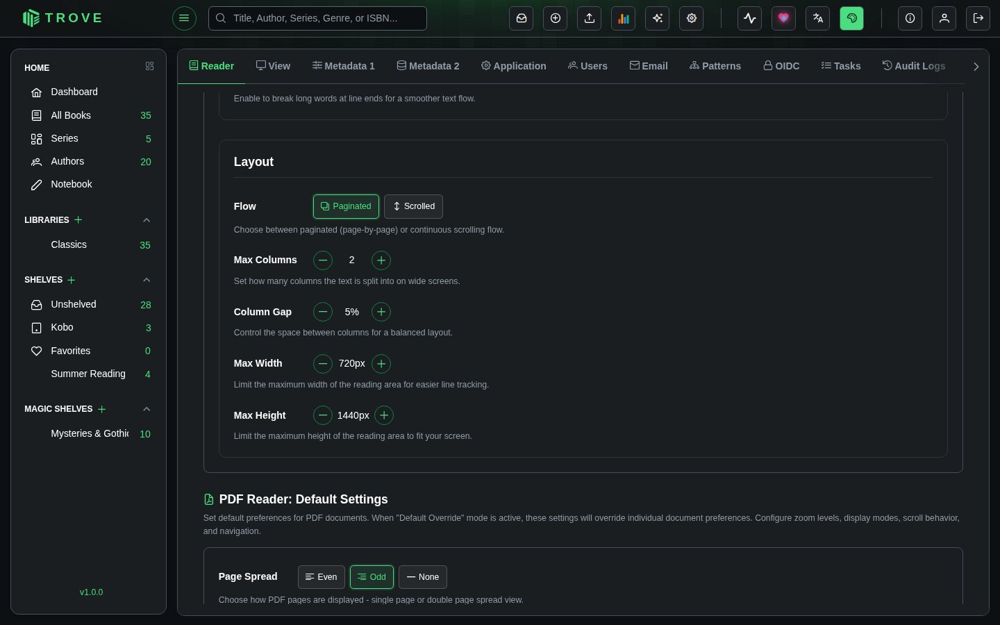
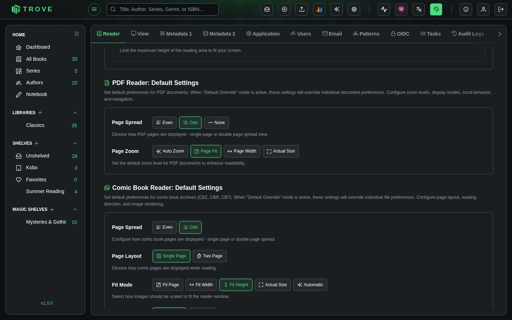
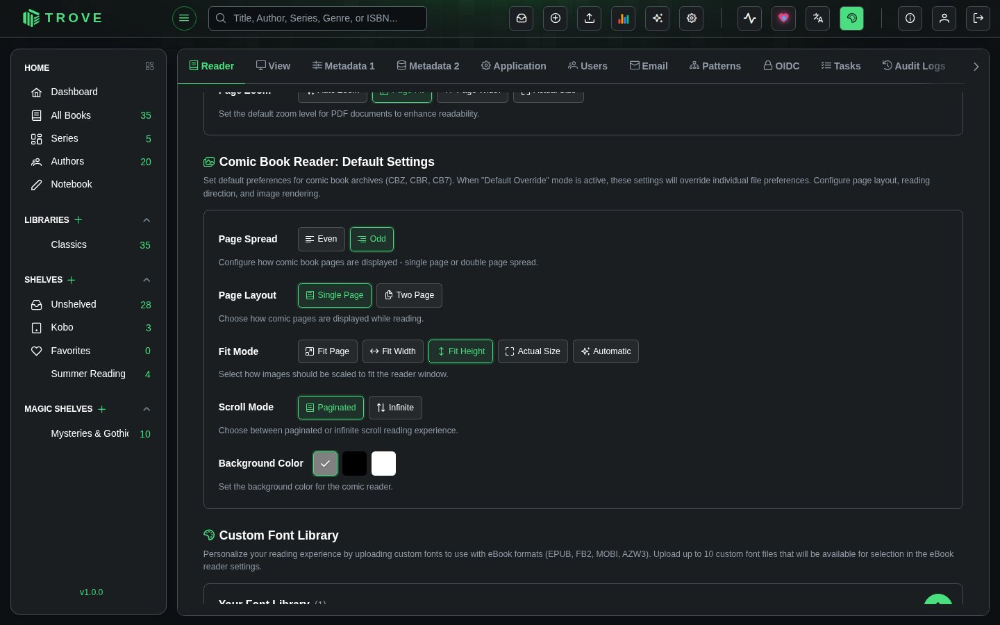
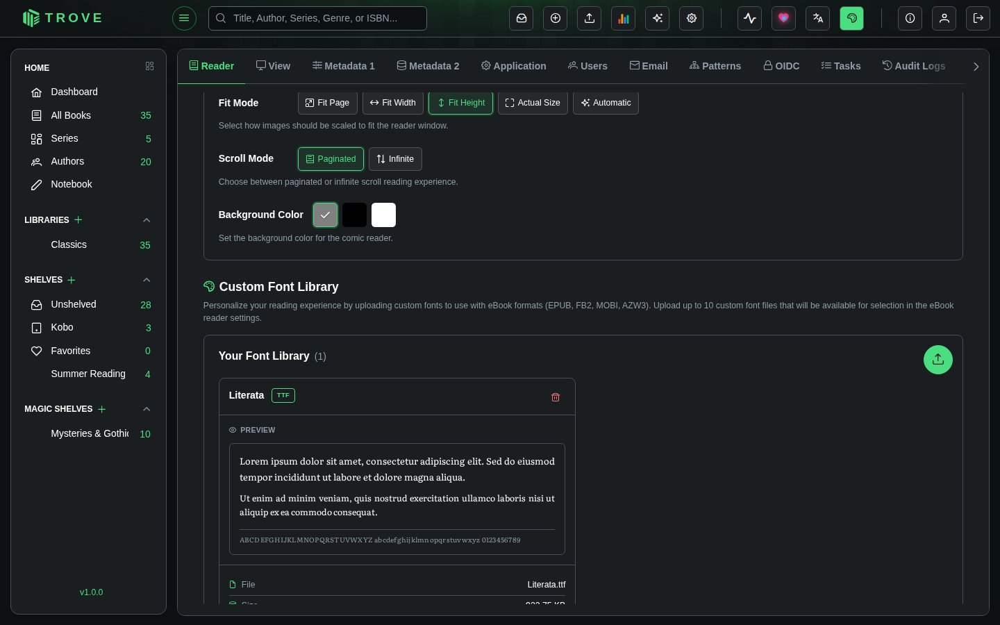

Reader Preferences
Configure reading experience settings for your library. Set default preferences that serve as overrides for individual books, or allow each book to maintain its own custom settings for PDF, EPUB, FB2, MOBI, AZW3, and CBX formats.
Navigate to Settings > Reader to access this page.
Settings Application Mode
Control how default reader settings are applied across your library. For each reader type, choose between two modes.

| Mode | Behavior |
|---|---|
| Default Override | Your default preferences are enforced across all books of the same format. Individual book settings are overridden. |
| Book-Specific | Each book maintains its own reader settings independently. Default preferences serve as the initial template for new books, but changes made while reading a specific book are remembered for that book only. |
This applies independently to four reader types:
| Reader Type | Formats | What It Controls |
|---|---|---|
| PDF Reader Settings | PDF (legacy viewer) | Zoom level, page layout, navigation preferences |
| eBook Reader Settings | EPUB, FB2, MOBI, AZW3 | Font, theme, layout preferences |
| Comic Book Reader Settings | CBZ, CBR, CB7 | Page layout, reading direction, scaling preferences |
| Streaming PDF Reader Settings | PDF (new viewer) | View mode, fit mode, scroll direction |
eBook Reader: Default Settings
Set default preferences for eBook formats (EPUB, FB2, MOBI, AZW3). When "Default Override" mode is active, these settings will override individual book preferences. The eBook reader settings are organized into three sections: Appearance, Typography, and Layout.
Appearance

| Setting | Options | Default | Description |
|---|---|---|---|
| Theme | 13 color themes | Sepia | Select a color scheme to match your reading environment and comfort. Each theme defines text color, background color, and link color. Available themes: Default, Gray, Sepia, Crimson, Meadow, Rosewood, Azure, Dawnlight, Ember, Aurora, Ocean, Mist, and AMOLED. |
| Dark Mode | Light, Dark | Light | Switch between light and dark backgrounds for day or night reading. Each theme has distinct light and dark variants. |
Typography

| Setting | Options | Default | Description |
|---|---|---|---|
| Font Family | Default, Serif, Sans Serif, Roboto, Cursive, Monospace, + custom fonts | Serif | "Default" uses the font embedded in the book file. Custom fonts uploaded through the Custom Font Library also appear here. |
| Font Size | 8pt to 72pt (1pt steps) | 16pt | Increase or decrease text size in points for optimal readability. |
| Line Height | 1.0 to 3.0 (0.1 steps) | 1.5 | Adjust vertical spacing between lines for better legibility. Higher values create more breathing room between lines. |
| Text Justification | Left, Justified | Left | Align text to the left or justify it for a clean edge on both sides. Justified text spreads words to fill the full line width. |
| Hyphenation | Off, On | Off | Enable to break long words at line ends for a smoother text flow. Works best with justified text to reduce uneven spacing. |
Layout

| Setting | Options | Default | Description |
|---|---|---|---|
| Flow | Paginated, Scrolled | Paginated | Choose between paginated (page-by-page) or continuous scrolling flow. Paginated mimics a physical book; scrolled provides a continuous reading stream. |
| Max Columns | 1 to 4 | 2 | Set how many columns the text is split into on wide screens. More columns work well on large monitors; single column is ideal for narrow screens. |
| Column Gap | 0% to 50% (5% steps) | 5% | Control the space between columns for a balanced layout. Only applies when using multiple columns. |
| Max Width | 400px to 2000px (50px steps) | 720px | Limit the maximum width of the reading area for easier line tracking. Narrower widths reduce eye strain on wide displays. |
| Max Height | 400px to 2000px (50px steps) | 1440px | Limit the maximum height of the reading area to fit your screen. |
PDF Reader: Default Settings
Set default preferences for PDF documents. When "Default Override" mode is active, these settings will override individual document preferences. Configure zoom levels, display modes, scroll behavior, and navigation.

| Setting | Options | Default | Description |
|---|---|---|---|
| Page Spread | Even, Odd, None | Odd | Choose how PDF pages are displayed. Even starts the spread from an even page. Odd starts from an odd page (standard for most books). None disables the spread view and displays single pages. |
| Page Zoom | Auto Zoom, Page Fit, Page Width, Actual Size | Page Fit | Set the default zoom level for PDF documents. Auto Zoom adjusts based on content. Page Fit fits the entire page in the viewport. Page Width fills the viewport width. Actual Size renders at 100% scale. |
Comic Book Reader: Default Settings
Set default preferences for comic book archives (CBZ, CBR, CB7). When "Default Override" mode is active, these settings will override individual file preferences. Configure page layout, reading direction, and image rendering.

| Setting | Options | Default | Description |
|---|---|---|---|
| Page Spread | Even, Odd | Odd | Configure how comic book pages are displayed in double page spread view. Controls which page starts the spread pairing. |
| Page Layout | Single Page, Two Page | Single Page | Choose how comic pages are displayed while reading. Single Page shows one page at a time. Two Page shows a side-by-side spread for a magazine-like experience on wide screens. |
| Fit Mode | Fit Page, Fit Width, Fit Height, Actual Size, Automatic | Fit Height | Select how images should be scaled to fit the reader window. Fit Page scales to fit entirely. Fit Width/Height fills that dimension. Actual Size renders at native resolution. Automatic chooses the best fit based on image and screen dimensions. |
| Scroll Mode | Paginated, Infinite | Paginated | Choose between paginated or infinite scroll reading experience. Paginated shows one page/spread at a time with navigation. Infinite scroll provides a continuous vertical stream of pages. |
| Background Color | Gray, Black, White | Gray | Set the background color for the comic reader. Gray works well for most comics, black is ideal for AMOLED screens, and white suits lighter artwork. |
Custom Font Library
Personalize your reading experience by uploading custom fonts to use with eBook formats (EPUB, FB2, MOBI, AZW3). Upload up to 10 custom font files that will be available for selection in the eBook reader settings.

Uploading Fonts
Click the Add New Font button (upload icon) in the top-right corner to open the upload dialog. You can drag and drop font files or browse to select them. Each upload shows a live preview of the font rendering so you can verify it looks correct before saving.
Supported Formats
| Format | Description |
|---|---|
| TTF | TrueType Font, the most widely used format |
| OTF | OpenType Font, supports advanced typography features |
| WOFF | Web Open Font Format, optimized for web delivery |
| WOFF2 | WOFF version 2, improved compression over WOFF |
Limits
| Limit | Value |
|---|---|
| Maximum fonts per user | 10 |
| Maximum file size per font | 5 MB |
| Maximum font name length | 100 characters |
Notes
- All reader types default to Book-Specific mode, meaning each book remembers its own settings.
- Switching from Book-Specific to Default Override will apply your default preferences to all books of that format. Individual customizations are preserved but hidden until you switch back.
- eBook reader themes each have dedicated light and dark variants. Switching Dark Mode changes the color palette while keeping the same theme character.
- Font size, line height, column gap, max width, and max height settings use increment/decrement buttons. You can click and hold for rapid adjustment.
- Custom fonts are stored per user. Each user has their own font library and limit of 10 fonts.
- The Streaming PDF Reader shares settings structure with the Comic Book Reader (page spread, fit mode, scroll mode, background color) but is configured separately.